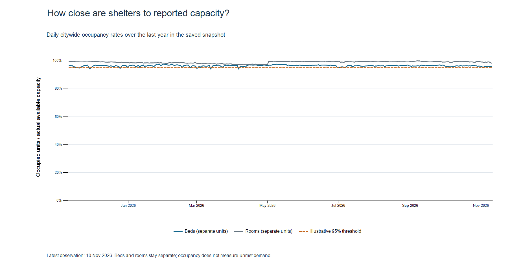
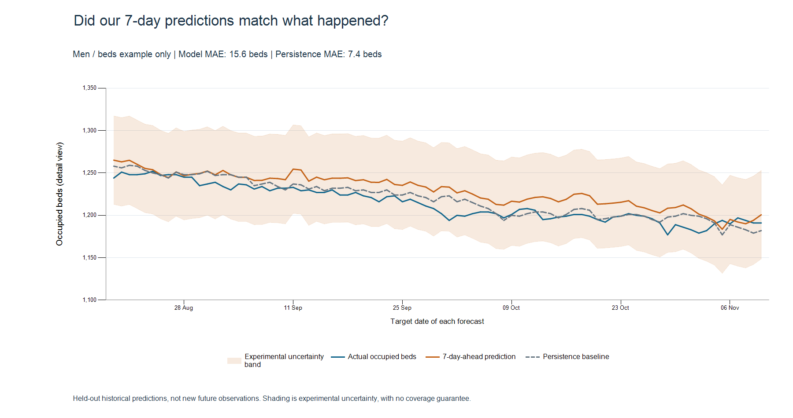
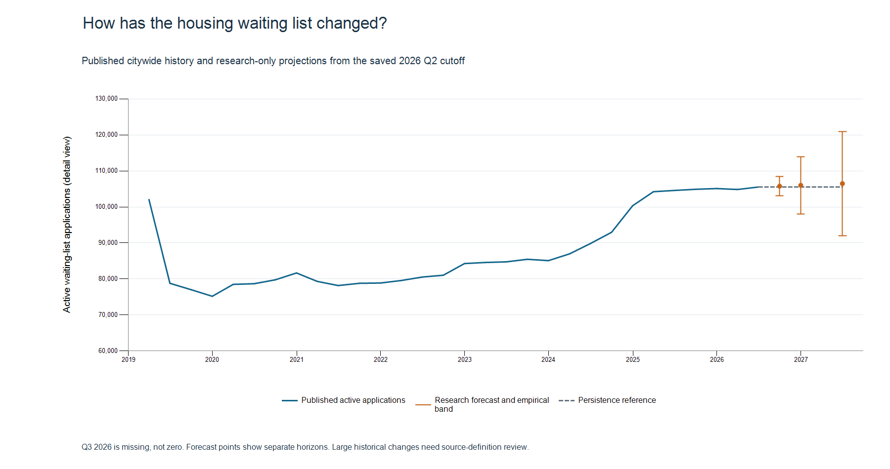
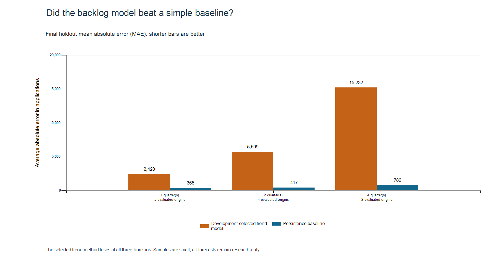

Pod 2 housing forecast research report
Working prototype with chronological evaluation and reproducible source snapshots
What this version delivers
Downloaded 8 official Toronto resources and loaded 291,217 provisional events. Shelter history runs from 2021-01-01 to 2026-11-10. Published waiting-list history contains 30 quarters.
Targets are occupancy counts by citywide sector and capacity unit at 7, 14 and 30 days after the latest observation, and active waiting-list counts at 1, 2 and 4 quarters. These are planning forecasts, not proven operational warnings.
Validation findings
These outputs are research-only. 23 of 27 shelter forecasts fail at least one initial validation check. 3 of 3 backlog forecasts lose to persistence on the final holdout. Baseline reference forecasts and holdout comparisons are exported beside each candidate forecast. Initial checks assess baseline MAE and observed interval coverage; passing them does not establish operational readiness.
Visual explanations
Read the history first, then compare predictions with actual outcomes and simple baselines. Charts use the saved data snapshot; models have not been retrained for this visualization update.
How close are shelters to reported capacity?

Did our 7-day predictions match what happened?

How has the housing waiting list changed?

Did the backlog model beat a simple baseline?

Shelter forecasts
| sector | unit | horizon_days | data_cutoff | target_date | predicted | baseline_forecast | lower90 | upper90 | capacity_assumption | pressure_scenario | validation_status | model |
|---|---|---|---|---|---|---|---|---|---|---|---|---|
| Families | beds | 7 | 2026-11-10 | 2026-11-17 | 14.00 | 14.00 | 13.00 | 15.00 | 21.00 | below_threshold | fails_interval_coverage | last |
| Families | beds | 14 | 2026-11-10 | 2026-11-24 | 14.00 | 14.00 | 11.00 | 17.00 | 21.00 | below_threshold | fails_interval_coverage | last |
| Families | beds | 30 | 2026-11-10 | 2026-12-10 | 14.00 | 14.00 | 7.00 | 21.00 | 21.00 | below_threshold | fails_interval_coverage | last |
| Families | rooms | 7 | 2026-11-10 | 2026-11-17 | 592.00 | 592.00 | 579.00 | 605.00 | 599.00 | pressure | fails_interval_coverage | last |
| Families | rooms | 14 | 2026-11-10 | 2026-11-24 | 592.00 | 592.00 | 573.00 | 611.00 | 599.00 | pressure | fails_interval_coverage | last |
| Families | rooms | 30 | 2026-11-10 | 2026-12-10 | 592.00 | 592.00 | 569.00 | 615.00 | 599.00 | pressure | fails_interval_coverage | last |
| Men | beds | 7 | 2026-11-10 | 2026-11-17 | 1,233.71 | 1,191.00 | 1,181.56 | 1,285.85 | 1,259.00 | pressure | fails_baseline | boosting |
| Men | beds | 14 | 2026-11-10 | 2026-11-24 | 1,300.15 | 1,191.00 | 1,226.95 | 1,373.36 | 1,259.00 | pressure | fails_baseline | boosting |
| Men | beds | 30 | 2026-11-10 | 2026-12-10 | 1,336.09 | 1,191.00 | 1,203.59 | 1,468.60 | 1,259.00 | pressure | fails_baseline | boosting |
| Men | rooms | 7 | 2026-11-10 | 2026-11-17 | 218.00 | 218.00 | 216.00 | 220.00 | 226.00 | pressure | fails_interval_coverage | last |
| Men | rooms | 14 | 2026-11-10 | 2026-11-24 | 218.00 | 218.00 | 207.00 | 229.00 | 226.00 | pressure | fails_interval_coverage | last |
| Men | rooms | 30 | 2026-11-10 | 2026-12-10 | 218.00 | 218.00 | 189.00 | 247.00 | 226.00 | pressure | fails_interval_coverage | last |
| Mixed Adult | beds | 7 | 2026-11-10 | 2026-11-17 | 1,089.40 | 1,079.00 | 974.49 | 1,204.32 | 1,092.00 | pressure | fails_baseline | ensemble |
| Mixed Adult | beds | 14 | 2026-11-10 | 2026-11-24 | 1,095.38 | 1,079.00 | 983.12 | 1,207.64 | 1,092.00 | pressure | fails_baseline | boosting |
| Mixed Adult | beds | 30 | 2026-11-10 | 2026-12-10 | 1,173.18 | 1,079.00 | 1,040.43 | 1,305.94 | 1,092.00 | pressure | fails_baseline | ensemble |
| Mixed Adult | rooms | 7 | 2026-11-10 | 2026-11-17 | 877.00 | 877.00 | 865.00 | 889.00 | 881.00 | pressure | fails_interval_coverage | last |
| Mixed Adult | rooms | 14 | 2026-11-10 | 2026-11-24 | 860.27 | 877.00 | 842.42 | 878.12 | 881.00 | pressure | fails_interval_coverage | ensemble |
| Mixed Adult | rooms | 30 | 2026-11-10 | 2026-12-10 | 842.08 | 877.00 | 819.01 | 865.15 | 881.00 | pressure | fails_interval_coverage | ensemble |
| Women | beds | 7 | 2026-11-10 | 2026-11-17 | 612.00 | 612.00 | 593.00 | 631.00 | 631.00 | pressure | passes_initial_checks | last |
| Women | beds | 14 | 2026-11-10 | 2026-11-24 | 612.00 | 612.00 | 581.00 | 643.00 | 631.00 | pressure | passes_initial_checks | last |
| Women | beds | 30 | 2026-11-10 | 2026-12-10 | 612.00 | 612.00 | 564.00 | 660.00 | 631.00 | pressure | passes_initial_checks | last |
| Women | rooms | 7 | 2026-11-10 | 2026-11-17 | 141.00 | 141.00 | 137.00 | 145.00 | 154.00 | below_threshold | fails_interval_coverage | last |
| Women | rooms | 14 | 2026-11-10 | 2026-11-24 | 141.00 | 141.00 | 137.00 | 145.00 | 154.00 | below_threshold | fails_interval_coverage | last |
| Women | rooms | 30 | 2026-11-10 | 2026-12-10 | 141.00 | 141.00 | 133.00 | 149.00 | 154.00 | below_threshold | fails_interval_coverage | last |
| Youth | beds | 7 | 2026-11-10 | 2026-11-17 | 691.00 | 691.00 | 682.00 | 700.00 | 738.00 | below_threshold | fails_interval_coverage | last |
| Youth | beds | 14 | 2026-11-10 | 2026-11-24 | 691.00 | 691.00 | 679.00 | 703.00 | 738.00 | below_threshold | fails_interval_coverage | last |
| Youth | beds | 30 | 2026-11-10 | 2026-12-10 | 691.00 | 691.00 | 670.00 | 712.00 | 738.00 | below_threshold | passes_initial_checks | last |
Shelter final holdout results
Model selection uses three earlier 60-day rolling validation windows. Training labels end on or before each cutoff. The final 90-day origin window is reserved for assessment. Counts of evaluated origins vary by horizon and missing data. Baseline comparisons remain in the downloadable metrics file.
| sector | unit | horizon | model | n | mae | rmse | bias | interval_coverage | precision | recall |
|---|---|---|---|---|---|---|---|---|---|---|
| Families | beds | 7 | last | 84 | 0.67 | 1.47 | -0.67 | 0.83 | Unavailable | Unavailable |
| Families | beds | 14 | last | 77 | 1.45 | 2.74 | -1.45 | 0.82 | Unavailable | Unavailable |
| Families | beds | 30 | last | 61 | 3.10 | 4.71 | -3.10 | 0.77 | Unavailable | Unavailable |
| Families | rooms | 7 | last | 84 | 7.40 | 11.32 | 5.12 | 0.82 | 1.00 | 1.00 |
| Families | rooms | 14 | last | 77 | 13.55 | 18.71 | 10.84 | 0.71 | 1.00 | 1.00 |
| Families | rooms | 30 | last | 61 | 26.18 | 29.84 | 26.02 | 0.36 | 1.00 | 1.00 |
| Men | beds | 7 | boosting | 84 | 15.64 | 17.46 | 15.10 | 1.00 | 0.66 | 0.96 |
| Men | beds | 14 | boosting | 77 | 26.17 | 28.04 | 26.17 | 1.00 | 0.64 | 1.00 |
| Men | beds | 30 | boosting | 61 | 58.40 | 61.60 | 58.40 | 1.00 | 0.61 | 1.00 |
| Men | rooms | 7 | last | 84 | 6.33 | 10.45 | 5.86 | 0.31 | 0.98 | 1.00 |
| Men | rooms | 14 | last | 77 | 12.29 | 17.56 | 12.26 | 0.71 | 0.97 | 1.00 |
| Men | rooms | 30 | last | 61 | 29.74 | 34.38 | 29.74 | 0.51 | 0.97 | 1.00 |
| Mixed Adult | beds | 7 | ensemble | 84 | 6.06 | 7.52 | 2.31 | 1.00 | 1.00 | 1.00 |
| Mixed Adult | beds | 14 | boosting | 77 | 6.78 | 9.41 | 0.59 | 1.00 | 1.00 | 1.00 |
| Mixed Adult | beds | 30 | ensemble | 61 | 7.27 | 8.81 | 3.13 | 1.00 | 1.00 | 1.00 |
| Mixed Adult | rooms | 7 | last | 84 | 16.38 | 20.40 | 16.07 | 0.48 | 1.00 | 1.00 |
| Mixed Adult | rooms | 14 | ensemble | 77 | 30.04 | 34.96 | 30.04 | 0.32 | 1.00 | 1.00 |
| Mixed Adult | rooms | 30 | ensemble | 61 | 64.44 | 65.56 | 64.44 | 0.00 | 1.00 | 1.00 |
| Women | beds | 7 | last | 84 | 6.14 | 7.86 | 4.62 | 1.00 | 1.00 | 1.00 |
| Women | beds | 14 | last | 77 | 9.75 | 12.09 | 8.97 | 1.00 | 1.00 | 1.00 |
| Women | beds | 30 | last | 61 | 17.72 | 19.68 | 17.72 | 1.00 | 1.00 | 1.00 |
| Women | rooms | 7 | last | 84 | 2.75 | 3.84 | 2.15 | 0.87 | 0.99 | 1.00 |
| Women | rooms | 14 | last | 77 | 4.90 | 6.16 | 4.25 | 0.66 | 0.99 | 1.00 |
| Women | rooms | 30 | last | 61 | 8.31 | 10.73 | 8.28 | 0.61 | 0.98 | 1.00 |
| Youth | beds | 7 | last | 84 | 7.17 | 9.51 | 1.36 | 0.73 | 0.65 | 0.87 |
| Youth | beds | 14 | last | 77 | 10.42 | 12.45 | 2.73 | 0.62 | 0.32 | 0.88 |
| Youth | beds | 30 | last | 61 | 8.79 | 10.34 | 5.41 | 1.00 | 0.05 | 1.00 |
Waiting-list forecasts
The forecast clock starts at the latest published quarter, not at today. Some target periods may already be in progress or completed when the report is read. All outputs are citywide; no neighbourhood distribution is inferred.
| horizon_quarters | data_period | target_period | predicted_backlog | change_from_latest | lower90 | upper90 | model | development_n | model_version | created_at | geography | status | validation_status | baseline_forecast | holdout_mae | baseline_holdout_mae | holdout_interval_coverage | wait_time_status | future_rgi_supply_status |
|---|---|---|---|---|---|---|---|---|---|---|---|---|---|---|---|---|---|---|---|
| 1 | 2026Q2 | 2026Q3 | 105,773.75 | 237.75 | 103,096.50 | 108,451.00 | drift4 | 11 | pod2-v0.1 | 2026-11-11T19:34:57.472339+00:00 | Toronto citywide | research_only_small_sample_revised_history | fails_baseline | 105,536.00 | 2,420.00 | 365.00 | 0.40 | unsupported_missing_target | missing |
| 2 | 2026Q2 | 2026Q4 | 106,011.50 | 475.50 | 98,033.00 | 113,990.00 | drift4 | 10 | pod2-v0.1 | 2026-11-11T19:34:57.609518+00:00 | Toronto citywide | research_only_small_sample_revised_history | fails_baseline | 105,536.00 | 5,699.25 | 417.25 | 1.00 | unsupported_missing_target | missing |
| 4 | 2026Q2 | 2027Q2 | 106,487.00 | 951.00 | 92,038.00 | 120,936.00 | drift4 | 8 | pod2-v0.1 | 2026-11-11T19:34:58.337092+00:00 | Toronto citywide | research_only_small_sample_revised_history | fails_baseline | 105,536.00 | 15,232.00 | 781.50 | 0.50 | unsupported_missing_target | missing |
Waiting-list evaluation
| horizon_quarters | stage | model | n | mae | rmse | bias | selected | interval_coverage |
|---|---|---|---|---|---|---|---|---|
| 1 | development | drift4 | 11 | 1,720.27 | 2,224.66 | -988.09 | True | Unavailable |
| 1 | development | last | 11 | 1,956.64 | 2,839.30 | -1,889.91 | False | Unavailable |
| 1 | development | ridge | 11 | 1,747.52 | 2,277.95 | -1,585.31 | False | Unavailable |
| 1 | holdout | drift4 | 5 | 2,420.00 | 2,728.40 | 2,207.20 | True | 0.40 |
| 1 | holdout | last | 5 | 365.00 | 401.23 | -259.40 | False | Unavailable |
| 1 | holdout | ridge | 5 | 2,436.82 | 2,814.41 | 2,103.60 | False | Unavailable |
| 2 | development | drift4 | 10 | 2,980.35 | 3,621.71 | -1,713.25 | True | Unavailable |
| 2 | development | last | 10 | 3,322.20 | 4,487.71 | -3,322.20 | False | Unavailable |
| 2 | development | ridge | 9 | 3,510.45 | 4,277.53 | -3,295.82 | False | Unavailable |
| 2 | holdout | drift4 | 4 | 5,699.25 | 6,134.54 | 5,699.25 | True | 1.00 |
| 2 | holdout | last | 4 | 417.25 | 475.18 | -390.75 | False | Unavailable |
| 2 | holdout | ridge | 4 | 9,375.63 | 9,858.21 | 9,375.63 | False | Unavailable |
| 4 | development | drift4 | 8 | 4,303.38 | 5,894.38 | -2,497.62 | True | Unavailable |
| 4 | development | last | 8 | 5,586.88 | 6,927.39 | -5,586.88 | False | Unavailable |
| 4 | development | ridge | 5 | 5,169.57 | 6,054.80 | -5,169.57 | False | Unavailable |
| 4 | holdout | drift4 | 2 | 15,232.00 | 15,299.54 | 15,232.00 | True | 0.50 |
| 4 | holdout | last | 2 | 781.50 | 799.67 | -781.50 | False | Unavailable |
| 4 | holdout | ridge | 2 | 25,321.26 | 25,578.66 | 25,321.26 | False | Unavailable |
Limitations and unfinished project requirements
- No forecast is approved for operational use. validation_status flags whether the development-selected model loses to persistence on the final holdout or its empirical bands cover fewer than 90% of held-out outcomes. The holdout is not reused to tune or reselect a better model.
- This is a research prototype. Shelter alerts use an illustrative 95% occupancy threshold that the team must approve.
- Shelter forecasts are citywide sector totals, separated into beds and rooms. They are not ward-level forecasts or estimates of unmet demand.
- Future capacity is held unchanged at the latest observed value. Openings, closures and policy changes can invalidate that assumption.
- Backtests use today's downloaded, potentially revised historical snapshot. Historical publication dates and data vintages are unavailable; the evaluation is not a fully reconstructed real-time test.
- The shelter holdout uses a fixed fitted model with daily observed inputs. Waiting-list holdout evaluation refits using only labels observable at each quarterly origin, with the selected model family fixed.
- Intervals use the 90th percentile of absolute development errors. They are empirical uncertainty bands, not guaranteed 90% prediction intervals. Inspect holdout coverage before use.
- Only 30 waiting-list quarters are published. Development and holdout samples are particularly small for four-quarter forecasts. Reporting changes and the large 2019 discontinuity require team review.
- The waiting-list source contains no waiting-time target. No individual or population waiting-time prediction is produced.
- The housing-units dataset measures existing stock, not available allocations or forthcoming RGI completions. It is ingested for audit but is not used as a future-supply predictor.
- LTB ingestion, OCR, NER redaction and eviction features are not implemented. A sanitized shared feed or a separately reviewed extraction pipeline is required.
- Official KinesisIQ schema validation, municipal boundary mapping and census-based spatial clustering remain integration tasks. Current event mappings follow the supplied template provisionally.
- A missing location ID receives an explicit unknown location and program-based site ID. No ward is inferred. Missing numeric facts remain null, and incomplete sector totals are excluded from modelling.
- A missing program row cannot establish a closure versus a reporting omission. Changes in the programs reported can change sector totals.
- Clustering describes recent operational profiles only. Seed stability is measured; temporal stability and demographic interpretation are not established.
- The alert evaluation compares point forecasts with realized target capacity. Live alerts instead assume unchanged current capacity; precision and recall are not evidence of a calibrated crossing probability.
Measures
| measure_key | modality | formula | units | missing_policy |
|---|---|---|---|---|
| occupancyrate | toronto_shelter | occupied / capacity for compatible units; capacity > 0 | ratio | null for invalid denominator or occupancy |
| sectoroccupancy | toronto_shelter | sum occupied / sum actual capacity within date, sector, unit | ratio | null if any reported program has invalid numeric facts |
| backlogvelocity | toronto_waitlist | backlog this quarter minus backlog previous quarter | applications per quarter | null when either quarter is missing |
| placementrate | toronto_waitlist | housed this quarter / backlog previous quarter | ratio per quarter | null for missing or zero prior backlog |
| unexplainednetchange | toronto_waitlist | backlog change - newreactivated + housed | applications | diagnostic residual; not a measured removals count |
| pressureflag | toronto_shelter | occupancyrate >= configured threshold | boolean | undefined for missing rate; provisional threshold |
Source inventory
| pipeline | resource_name | resource_id | sha256 |
|---|---|---|---|
| shelter | Daily shelter overnight occupancy | 42714176-4f05-44e6-b157-2b57f29b856a | 76f1888e841279ad6c7992fa841e6b9ef47b4a10cb8742b946e7a34599a4ddfc |
| shelter | daily-shelter-overnight-service-occupancy-capacity-2025 | 5dc4fbfc-0951-45e8-ae30-962af9dcaf7c | 229dd1791055edee38618d781b1e06a8eea2877b649a7672b008b79247bf828c |
| shelter | daily-shelter-overnight-service-occupancy-capacity-2024 | fc409fd7-0348-49d7-bba9-70ac1a8c727c | 11aa03fb45d6cddab86250c0813c554951acb22ec1a469c9d27d6619b3db474b |
| shelter | daily-shelter-overnight-service-occupancy-capacity-2023 | 62786156-b463-4c04-b286-c23f32c726ab | ebd7b1cade4382aba333197f711482b835071af835e2d8ee9ee41fee33b8b8bd |
| shelter | daily-shelter-overnight-service-occupancy-capacity-2022 | 1cc46acb-c6d3-4537-93ef-3ebad039275c | 196a58c02cd9f30689dab2a9f249a1b6fce4b013b0be078a94f31a29d6c31dd9 |
| shelter | daily-shelter-overnight-service-occupancy-capacity-2021 | da8854b8-e570-4de2-b051-a906b62fe7f8 | e297917c87fe07ff80ebb1feb6029752faf1bedf5dd54759180285f17a49e1c1 |
| waitlist | Centralized Waitlist for Social Housing | 825a9665-49cb-4d01-9e29-cb21dba0c4be | 57856f4a3dbcb5055ed06c51ea0863ebc60157344bc58cb4302cb254fc9a30bb |
| supply | Social and Affordable Housing | f8d91828-86dd-42bd-bb0b-0a8e963b6a02 | ec230c9411f57d4cc860f0587b5a288c93716210f7d8eba0d44b73bf90c92dc0 |